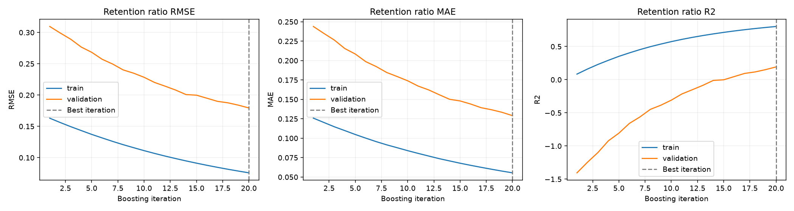

Ordered target statistics, symmetric trees, plain gradient boosting. This is an educational implementation, not full CatBoost ordered boosting. Train curves use ordered encodings; validation and inference use complete training-category statistics.
| mae | rmse | r2 | |
|---|---|---|---|
| retention_ratio | 0.1032 | 0.1346 | 0.7007 |
| price_myr | 378.7942 | 493.1185 | 0.6549 |
Best iteration: 20

Lower MAE/RMSE is better; higher R² is better. Ratio metrics and MYR price metrics use different units. Synthetic results do not establish real-market accuracy.